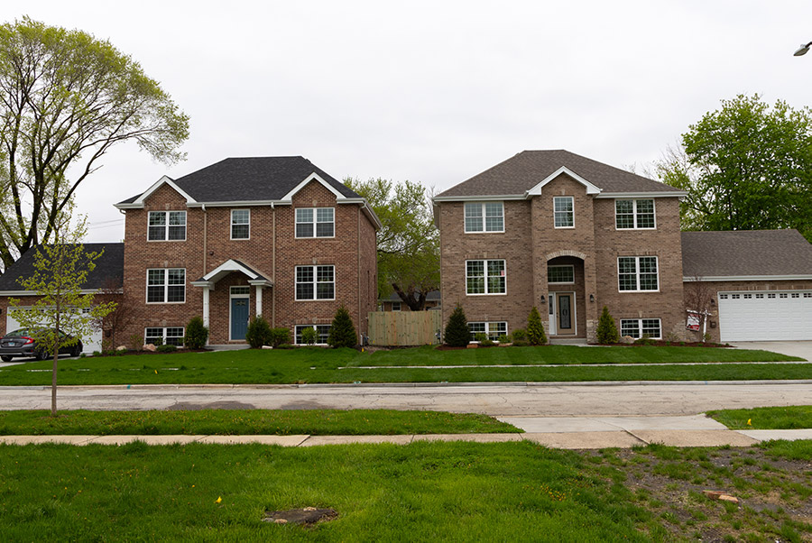

After demolishing its former recreation hall, Lyons embarked on plan to redevelop the site with M & F Masonry, a sister company of Skyway Homes. Skyway Homes built Mayor Chris Getty's current home.

Former recreation hall property on Gage Avenue
Nov. 2017
Lyons gets the 16,988-square-foot property appraised at about $85,000.
Dec. 2017
Lyons sells the property to M & F Masonry for $72,000 after the firm submits the only bid. M & F begins construction on two homes.
April 2019
A couple secures a $427,310 mortgage for one of the homes. The other remains unfinished.